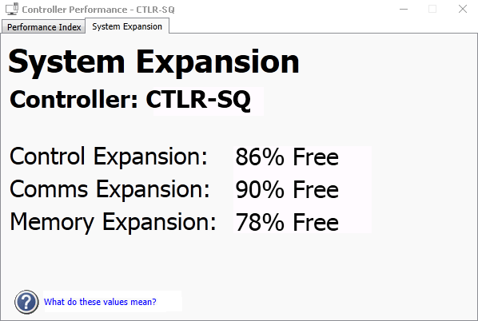

Monitor MQ, MX, PK, SQ, SX, or SZ controller or Ethernet I/O card expansion
Available expansion capacity for an MQ, MX, PK, SX, SQ, or SZ controller or an Ethernet I/O card (EIOC) card appears on the System Expansion tab of the Controller Performance dialog in DeltaV Diagnostics. To open the Controller Performance dialog, right-click the controller or EIOC, and then select Time Utilization Chart from the shortcut menu.

The System Expansion parameters exist for the performance indices (Control, Comms, Memory and System) to provide guidance on how close to an unsupported configuration the controller is. These values represent the resources available for engineering expansion, expressed as a percentage of the total capacity of each respective partition. For example, if the control expansion value is 50%, this means the device’s control partition has half of its capacity free for additional configuration. When these values reach 0%, the controller has no capacity remaining for expansion and is in an unsupported condition (performance index = 1).
- System Expansion (SYSTEM_EXPSN)
- Control Expansion (CONTROL_EXPSN)
- Comms Expansion (COMMS_EXPSN)
- Memory Expansion (MEM_EXPSN)
In the case of OPC UA communications on the PK controller as an OPC UA server, the OPC UA communications always has a lower priority than other control communications. This means that control communications will always take resources away from any OPC UA communications in order for the control to proceed (OPC UA communications may slow until adequate resources are available).
The expansion values are equivalent to the pie charts in the DeltaV Controller Load Estimator. While the Controller Load Estimator provides a predicted load, you can use the values on the System Expansion tab of the Controller Performance dialog to evaluate the actual capacity remaining, based on the current downloaded configuration.